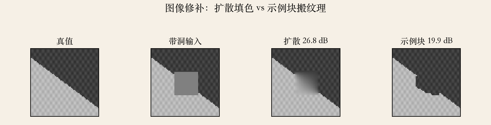
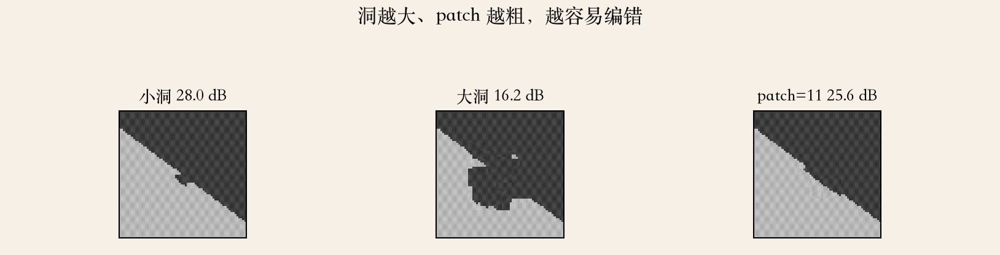
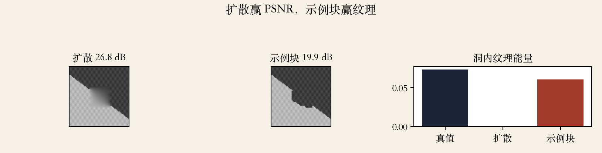

第 10 章 · 图像修补
修补：把洞补得像原来就在
- 移除物体或缺陷会留下洞。
- 把洞补上叫 inpainting。
- 补出的结构、纹理、颜色都要像。
- 洞大时，要借图像别处的纹理。
依据：原书第 665 页
修补是什么
不是恢复唯一真值
是有条件地编造
方法看洞的大小和背景
实验图 · 两种方法
扩散与示例块
- 扩散把周围颜色平均进洞。
- 示例块从已知区搬小块纹理。
- 扩散 26.8 dB，示例块 19.9 dB。
- PSNR 高，不代表纹理对。
依据：本集实验

图像修补：真值、带洞输入、扩散 26.8 dB、示例块 19.9 dB｜程序生成，未用教材或论文原图
第 10 章 · 扩散修补
沿等照度线传播
- 可以去掉人物、划痕和钢丝。
- 等照度线就是亮度相同的线。
- 沿它传播，边缘不会被抹断。
- Telea 用快速行进法加速。
依据：原书第 666 页
适用与局限
小洞和平滑区够用
不会生成纹理
强边缘会被接成圆弧
第 10 章 · 纹理修补
onion-peel：从外向内填
- 在修补区域加合成纹理。
- 示例块可以从外向内填。
- 这种顺序可能传不好强方向结构。
- 适合纹理均匀的大洞。
依据：原书第 666 页
顺序的代价
一圈圈往里面补
长边缘容易被带歪
置信度更新不等于结构对
第 10 章 · Criminisi
先补结构最强的位置
- Criminisi 用示例块纹理合成。
- 顺序由边界上的梯度强度决定。
- 优先级等于置信度乘数据项。
- 每补一块，置信度往下传。
依据：原书第 666 页
优先级
数据项：结构有多强
置信度：周围已知像素多少
顺序错，结构会被切断
第 10 章 · 大图库
从图库里整块搬
- 有大图像库时，可以复制整块区域。
- Hays 和 Efros 用上下文选源图。
- 还要看边界兼容性。
- 图割接缝，泊松融合颜色。
依据：原书第 666 页
难点
语义和光照都要匹配
接缝靠融合藏
没有图库就在本图找
第 10 章 · 深度网络
学习式：partial convolution
- 现在主流方法用深度网络。
- partial conv 只对已知像素卷积。
- 掩码随层传播。
- 还有边缘传播和多分辨率结构。
依据：原书第 667 页
能编，也可能编错
学洞周围该长什么样
掩码边界仍可能出伪影
评测要看感知质量
本集实验 · 指标
PSNR 与纹理指标
- 常数填充 21.58 dB。
- 扩散 26.83 dB，示例块 19.86 dB。
- 纹理能量真值 0.0734，示例块 0.0605。
- 边缘相关扩散 0.823，示例块 0.720。
依据：本集实验
两组读数
PSNR 偏爱扩散
纹理能量偏爱示例块
边缘相关也偏高
实验图 · 洞大小
洞越大，越容易编错
- 小洞 28.01 dB。
- 大洞 16.19 dB。
- patch=11 是 25.6 dB。
- 与 patch=7 差 5.77 dB。
依据：本集实验

洞大小与 patch：小洞 28.01 dB，大洞 16.19 dB，patch=11 25.6 dB｜程序生成，未用教材或论文原图
实验图 · 简化优先级
简化实现没有赢
- 这一集实现了简化的 Criminisi 优先级。
- 结果没有赢过简单的 onion-peel。
- 场景纹理均匀，结构也简单。
- 负结果保留，不冒充论文结论。
依据：本集实验

扩散 26.8 dB 与示例块 19.9 dB；洞内纹理能量 0 与 0.0605｜程序生成，未用教材或论文原图
工程选型
怎么选修补方法
- 小洞和平滑背景，用扩散，快且稳。
- 大洞或有纹理，用示例块或学习式。
- 长边缘和栏杆，先补结构。
- PSNR 只是参考。
依据：本集实验
交付前检查
放大看接缝和重复
看方向有没有断
修补前备份原图
第 10 章 · 收束
修补：填洞、保结构、看效果
- 修补是用邻域或别处纹理填洞。
- 扩散保平滑，示例块保纹理。
- 填充顺序决定结构。
- PSNR 不等于看起来真。
依据：原书第 665–667 页
下一集
手机夜景模式的管线
HDR、超分、去噪、去雾
下一集：应用综合